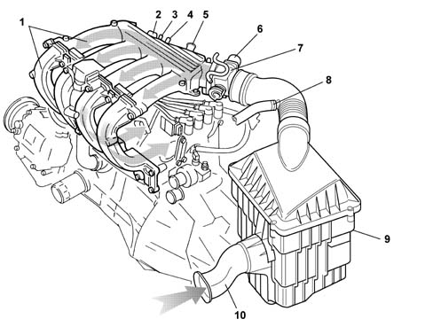

1048A vacuum air circuit
- Path
- Descriptions > 10 ENGINE UNIT > 1048 ENGINE AIR SUPPLY CIRCUIT > 1048A vacuum air circuit
- Kind
- system description
- Applies to
- engines: 1.6 16v; all production periods
- Interactive page
- https://sloeber94.github.io/elrnDB-fMltpl/en/#/2888227
Applies to: engines: 1.6 16v; all production periods
The air intake circuit consists of various components which ensure that the air flow required by the engine in the various operating conditions is correctly directed.

1, Inlet manifold 2, Intake air pressure and temperature sensor (See subassembly 1056PETROL INJECTION SYSTEM) 3, Intake for fuel anti-evaporation system (See subassembly 1080EXHAUST EMISSION CONTROL SYSTEM) 4, Gas intake from engine crankcase (blow-by) for recirculating exhaust gases at idle speed (See subassembly 1080EXHAUST EMISSION CONTROL SYSTEM) 5, Intake for brake servo 6, Engine idle speed actuator (See subassembly 1056PETROL INJECTION SYSTEM) 7, Butterfly casing (See subassembly 1056PETROL INJECTION SYSTEM) 8, Main gas intake from engine crankcase (See subassembly 1080EXHAUST EMISSION CONTROL SYSTEM) 9, Air filter 10, Intake vent